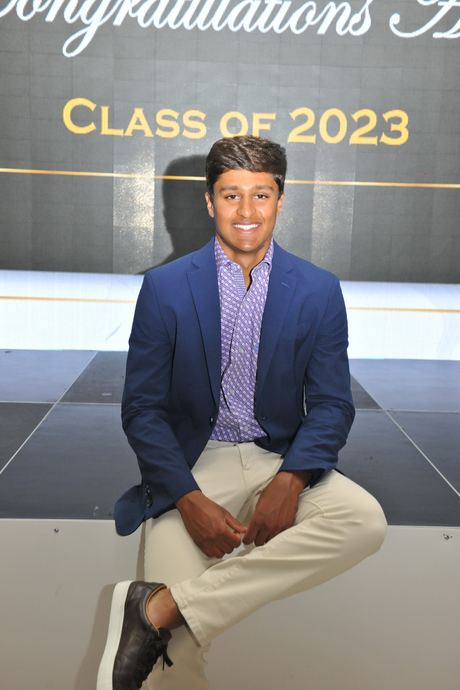

Aditya Koul
Hi there! My name is Aditya Koul. I am a Computer Science student at The University of Maryland, College Park, specializing in machine learning, robotics and autonomous systems. I am interested in adapting machine learning principles to all aspects of full-stack engineering and robotics.
This is my personal website, where I will share my projects and other information about me.